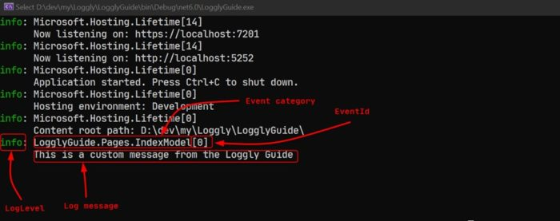
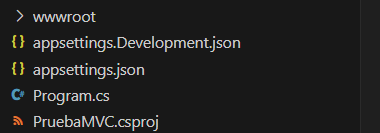

Tema 17 · .NET 10
Logs de aplicaciones
ILogger · niveles · log estructurado · Serilog · registrar las excepciones

Dónde quedamos
Tema 16 · Excepciones
- Capturamos los errores con
try-catch - La Web API ya no se cae: responde un 404 o un 500 prolijo
- Al usuario, un mensaje amable, sin el
StackTrace
El problema
- El error ocurrió… y nadie se enteró
- En .NET 10, si nuestro manejador atrapa la excepción, el framework no la registra
- El detalle técnico no se le muestra al usuario: ¿dónde queda, entonces?
Logs o registros
- Logging es el procedimiento de grabar y guardar esos eventos
- Cada entrada dice cuándo pasó, qué tan grave es, quién la escribió y qué pasó
- Constituye una evidencia del comportamiento del sistema: lo que pasó a las 3 de la mañana se puede leer a las 9
¿Para qué sirven?
Depuración
Reconstruir qué pasó antes de un error que no se puede reproducir.
Monitoreo
Ver en vivo cómo se comporta la aplicación: cuántos errores, qué tan lenta responde.
Auditoría
Quién hizo qué y cuándo: quién borró ese registro, quién cambió ese precio.
Análisis forense
Después de un incidente, entender cómo ocurrió y qué alcance tuvo.
Detección de intrusos
Patrones raros: cien intentos de login fallidos en un minuto.
Cumplir la ley
Un proveedor de internet, por ejemplo, está obligado a registrar las conexiones de sus clientes.
Anatomía de una línea de log
2026-09-22 22:25:58cuándo[WRN]nivelManejadorGlobal:categoría (quién)Pedido inválido en /productos/9mensaje (qué)
- El nivel permite filtrar: ver solo los errores
- La categoría dice qué clase lo escribió
- El mensaje lo escribimos nosotros: tiene que servirle a quien lo lea dentro de seis meses
ILogger: una API, muchos destinos
.NET trae una API de registro, ILogger, de alto rendimiento y con soporte para log estructurado. El código escribe siempre igual; los proveedores deciden adónde va cada mensaje.
¿Cómo llega el logger a nuestra clase?
Lo pedimos en el constructor y el framework nos lo entrega solo: es inyección de dependencias (lo vemos a fondo en el tema 14).
Forma clásica
public class ProductosController : ControllerBase { private readonly ILogger<ProductosController> _logger; public ProductosController(ILogger<ProductosController> logger) { _logger = logger; } }
Con constructor primario (C# 12)
public class ProductosController(ILogger<ProductosController> logger) : ControllerBase { // "logger" se usa directo en los métodos }
- El
<T>define la categoría: cada línea dirá que la escribióProductosController - Funciona igual en controladores, servicios, repositorios…
Niveles de log
| Nivel | Valor | Método | Para qué |
|---|---|---|---|
| Trace | 0 | LogTrace | El máximo detalle. Puede incluir datos sensibles: nunca en producción. |
| Debug | 1 | LogDebug | Información para depurar durante el desarrollo. |
| Information | 2 | LogInformation | El flujo normal: se creó un pedido, se inició la aplicación. |
| Warning | 3 | LogWarning | Algo anómalo o inesperado que no detuvo la aplicación. |
| Error | 4 | LogError | Falló la operación actual (este request), no toda la aplicación. |
| Critical | 5 | LogCritical | Requiere atención inmediata: pérdida de datos, disco lleno. |
None | 6 | — | No se escribe ningún mensaje. |
De menor a mayor gravedad. Elegir bien el nivel es lo que después permite filtrar.
El nivel mínimo filtra
Se configura un nivel mínimo: se registra ese nivel y todos los más graves. Los de abajo se descartan.
Information
TraceDebugInformationWarningErrorCritical
Warning
TraceDebugInformationWarningErrorCritical
Debug
TraceDebugInformationWarningErrorCritical
logger.LogDebug("Buscando el producto {ProductoId}", id); logger.LogInformation("Se consultó el producto {ProductoId}", id); logger.LogWarning("Pedido inválido en {Ruta}", ruta);
Debug mientras desarrollamos y Information o Warning en producción. Mismo código, otra configuración.Se configura en appsettings.json
{
"Logging": {
"LogLevel": {
"Default": "Information",
"Microsoft.AspNetCore": "Warning"
}
}
}
Default: el mínimo para todas las categorías- Una categoría (un espacio de nombres) puede tener su propio mínimo: acá, lo interno de ASP.NET Core solo muestra de
Warningpara arriba - Es la sección que ya trae el proyecto que crea
dotnet new webapi

appsettings.Development.json pisa lo del general cuando la aplicación corre en desarrollo: ahí se puede bajar a Debug sin tocar la configuración de producción.
Log estructurado: plantillas, no strings armados
✗ Así no
logger.LogInformation(
"Se consultó el producto " + producto.Id);
logger.LogInformation(
$"Se consultó el producto {producto.Id}");
Llega un texto ya armado: el número quedó enterrado adentro. Además, el string se arma aunque ese nivel esté filtrado.
✓ Así
logger.LogInformation(
"Se consultó el producto {ProductoId} ({Nombre})",
producto.Id, producto.Nombre);
Una plantilla con marcadores con nombre, y los valores aparte. Sin $.
Se consultó el producto 2 (Mate). La diferencia está en lo que se guarda.Lo que se guarda: datos, no solo texto
El mismo evento de la diapo anterior, guardado en formato JSON (salida real del proyecto de ejemplo, resumida):
{
"@t": "2026-09-23T01:26:11.158Z",
"@mt": "Se consultó el producto {ProductoId} ({Nombre})",
"@tr": "24117f2a45415505d052c3e294278259",
"ProductoId": 2,
"Nombre": "Mate",
"SourceContext": "ProductosController",
"RequestPath": "/productos/2"
}
ProductoIdes un campo, con su tipo: se puede buscar “todos los eventos del producto 2” sin adivinar cómo estaba redactado el mensaje- Los nombres de los marcadores (
{ProductoId}) conviene escribirlos en PascalCase y usar siempre los mismos
Registrar una excepción
✗ Armar el mensaje a mano
catch (Exception ex) { var mensaje = "Error: " + ex.Message; if (ex.InnerException != null) mensaje += " Inner: " + ex.InnerException.Message; mensaje += " Stack: " + ex.StackTrace; _logger.LogError(mensaje); }
Mucho trabajo, y todo termina en un único texto.
✓ Pasar la excepción como primer argumento
catch (Exception ex) { _logger.LogError(ex, "No se pudo guardar el pedido {PedidoId}", pedido.Id); throw; }
El logger guarda solo el tipo, el Message, las InnerException y el StackTrace completos. El mensaje nuestro agrega el contexto: qué estábamos haciendo.
¿Dónde colocar el log?
→ para ver cada caso.
El catch que resuelve
catch (HttpRequestException ex) { logger.LogWarning(ex, "Sin cotización, uso la de ayer"); cotizacion = _ultimaConocida; }
✓ Se loguea: el error desaparece ahí, y si no queda escrito, nadie lo va a saber.
El catch que relanza
catch (Exception ex) { logger.LogError(ex, "…"); // ✗ throw; }
✗ Si sube, alguien de más arriba la va a registrar: queda duplicada. O se loguea, o se relanza, salvo que se agregue contexto que arriba no existe.
El manejador global
public class ManejadorGlobal(…) : IExceptionHandler { // todo lo que nadie capturó // termina acá: se loguea // una sola vez }
✓ La red de seguridad: lo que se escapa de cualquier controlador se registra en un único lugar.
¿Y el archivo?
- La consola se pierde al cerrar la aplicación; en un servidor, nadie la está mirando
- Los proveedores de fábrica de .NET no escriben a archivo (tampoco en .NET 10)
- Para eso se usa una librería de terceros: la más difundida es Serilog
Serilog se enchufa detrás de ILogger
Nuestro código sigue usando ILogger<T> y LogInformation, sin cambiar una línea. Serilog solo reemplaza adónde va cada mensaje: consola, archivo, base de datos, servicios en la nube…
Cada destino se llama sink (sumidero).
Instalar Serilog
1 · El paquete
dotnet add package Serilog.AspNetCore
Trae Serilog, los sinks de consola y de archivo, y la lectura de configuración desde appsettings.json.
2 · Program.cs
using Serilog; var builder = WebApplication.CreateBuilder(args); // Serilog reemplaza al logger por defecto // y lee su configuración de appsettings.json builder.Services.AddSerilog(config => config.ReadFrom.Configuration(builder.Configuration)); builder.Services.AddControllers(); var app = builder.Build(); app.UseSerilogRequestLogging(); // una línea por request app.MapControllers(); app.Run();
Configurar Serilog en appsettings.json
{
"Serilog": {
"MinimumLevel": {
"Default": "Information",
"Override": { "Microsoft.AspNetCore": "Warning" }
},
"WriteTo": [
{ "Name": "Console" },
{
"Name": "File",
"Args": {
"path": "logs/log-.txt",
"rollingInterval": "Day",
"outputTemplate": "{Timestamp:yyyy-MM-dd HH:mm:ss} [{Level:u3}]
{SourceContext}: {Message:lj} (trace {TraceId}){NewLine}{Exception}"
}
}
]
}
}
- Reemplaza a la sección
"Logging": los niveles mínimos ahora van enMinimumLevel WriteTo: la lista de sinks. Acá, consola y archivo a la vezrollingInterval: Day: un archivo nuevo por día →log-20260922.txtoutputTemplate: el formato de cada línea
En el ejemplo, outputTemplate va en una sola línea: acá está partido para que entre.
El resultado: logs/log-20260922.txt
2026-09-22 22:25:58 [INF] Microsoft.Hosting.Lifetime: Now listening on: http://localhost:5198 (trace ) 2026-09-22 22:25:58 [INF] ProductosController: Se consultó el producto 1 (Yerba) (trace c9a857db59d2ba68834b7b84b17be62b) 2026-09-22 22:25:58 [INF] Serilog.AspNetCore.RequestLoggingMiddleware: HTTP GET /productos/1 responded 200 in 39.5703 ms (trace c9a857db…) 2026-09-22 22:25:58 [WRN] ManejadorGlobal: Pedido inválido en /productos/9: No existe el producto 9 (trace 250eefa86ab310bd0a9070c6aaf0c1c0) 2026-09-22 22:25:58 [INF] Serilog.AspNetCore.RequestLoggingMiddleware: HTTP GET /productos/9 responded 404 in 19.6179 ms (trace 250eefa8…) 2026-09-22 22:25:58 [ERR] ManejadorGlobal: Error no controlado en /productos/boom (trace 7b05a4271d2184b4ebea738b079a5dfc) System.InvalidOperationException: La base de datos no responde at ProductosController.Boom() in …\Controllers\ProductosController.cs:line 31 … 2026-09-22 22:25:58 [ERR] Serilog.AspNetCore.RequestLoggingMiddleware: HTTP GET /productos/boom responded 500 in 6.9062 ms (trace 7b05a427…)
Salida real del proyecto de ejemplo. Cada request deja: lo que escribimos nosotros (ProductosController, ManejadorGlobal) y la línea de resumen de UseSerilogRequestLogging: verbo, ruta, código de estado y tiempo.
El Error trae la excepción completa con su StackTrace, que al cliente no le mostramos. El log es el lugar para ese detalle.
Cuidado con el orden del pipeline
✗ Request logging después
app.UseExceptionHandler(); app.UseSerilogRequestLogging();
[ERR] HTTP GET /productos/9 responded 500 System.Collections.Generic.KeyNotFoundException… [WRN] Pedido inválido en /productos/9 …
Ve pasar la excepción antes de que el manejador la convierta en 404: registra un 500 que el cliente nunca recibió, y el error queda duplicado.
✓ Request logging antes
app.UseSerilogRequestLogging(); app.UseExceptionHandler();
[WRN] Pedido inválido en /productos/9 …
[INF] HTTP GET /productos/9 responded 404
Envuelve a todo el resto: registra la respuesta final, la que realmente salió.
El manejador global, ahora con log
public class ManejadorGlobal( IProblemDetailsService problemDetails, ILogger<ManejadorGlobal> logger) : IExceptionHandler { public async ValueTask<bool> TryHandleAsync( HttpContext http, Exception ex, CancellationToken ct) { http.Response.StatusCode = ex switch { KeyNotFoundException => 404, ArgumentException => 400, _ => 500 }; if (http.Response.StatusCode >= 500) logger.LogError(ex, "Error no controlado en {Ruta}", http.Request.Path); else logger.LogWarning("Pedido inválido en {Ruta}: {Mensaje}", http.Request.Path, ex.Message); return await problemDetails.TryWriteAsync(…); // igual que en el tema 16 } }
- 500: falla nuestra →
Error, con la excepción completa - 4xx: el cliente pidió algo inválido →
Warning, sinStackTrace: no es un bug - Así se cierra lo que dejó abierto .NET 10: la excepción se maneja y queda registrada
En el ejemplo se usa StatusCodes.Status404NotFound; acá van los números para que entre.
Del traceId al log
Un usuario reporta un error y nos pasa lo que recibió. El traceId de la respuesta es el mismo que quedó en el log:
{ "title": "Ocurrió un error", "status": 404, "detail": "No existe el producto 9",
"traceId": "00-250eefa86ab310bd0a9070c6aaf0c1c0-8663a514797147fa-00" }Lo que quedó en logs/log-20260922.txt:
2026-09-22 22:25:58 [WRN] ManejadorGlobal: Pedido inválido en /productos/9: No existe el producto 9 (trace 250eefa86ab310bd0a9070c6aaf0c1c0) 2026-09-22 22:25:58 [INF] …RequestLoggingMiddleware: HTTP GET /productos/9 responded 404 in 19.6179 ms (trace 250eefa86ab310bd0a9070c6aaf0c1c0)
Debate: ¿qué conviene registrar?
¿Solo vamos a loguear los try-catch?
Pensemos en una aplicación de pedidos: ¿qué nos gustaría poder leer mañana si algo sale mal… o si todo sale bien?
“¡Si logueamos todo, no se escapa nada!”
Suena bien, pero:
- Ruido: el error importante queda enterrado entre millones de líneas
- Espacio y costo: los archivos crecen, y en la nube se paga por gigabyte
- Rendimiento: escribir también lleva tiempo
- Seguridad: tarde o temprano se loguea algo que no debía
Qué sí y qué nunca
✓ Conviene registrar
- Errores y excepciones, con contexto (qué pedido, qué usuario)
- Eventos del negocio: se creó un pedido, se anuló una venta
- Inicio y fin de la aplicación, cambios de configuración
- Llamadas a sistemas externos: una API que tardó demasiado
- Acciones de seguridad: logins fallidos, accesos denegados
✗ Nunca registrar
- Contraseñas, aunque sean las que fallaron
- Tokens, claves de API, cadenas de conexión
- Números de tarjeta y datos bancarios
- Datos personales que no hacen falta (DNI, domicilio, salud)
Ojo con {@Producto}: guarda el objeto entero. Con un Usuario se iría también su contraseña.
Conclusiones
- Construir el programa pensando en las excepciones lo hace robusto; registrarlas lo hace mantenible.
- Al usuario, un mensaje que pueda entender; el detalle técnico, al log.
- Usar
ILogger<T>siempre, con plantillas y el nivel adecuado. - Las excepciones se pasan como primer argumento:
LogError(ex, "…"). - Cada error se registra una vez: donde se resuelve, o en el manejador global.
- Para que el log sobreviva, a archivo: Serilog, configurado desde
appsettings.json.
Ejemplo y práctica
Proyecto de ejemplo
Web API .NET 10 con Serilog y el manejador global, en proyecto-ejemplo. El archivo EjemploLogs.http tiene un request para cada caso (200, 404, 400, 500).
cd tema-17-logs/proyecto-ejemplo dotnet run # los logs quedan en logs/log-AAAAMMDD.txt y .json
Propuesta práctica
Agregar Serilog a la Web API del tema 06: registrar a archivo, loguear los eventos importantes con plantillas y capturar los errores en un manejador global.
link de GitHub Classroom 2026
Bibliografía
- Microsoft Learn — Registro en C# y .NET
- Microsoft Learn — Registro en .NET Core y ASP.NET Core
- Microsoft Learn — Control de errores en ASP.NET Core
- Serilog — serilog-aspnetcore · configuración desde appsettings.json · Message Templates
- OWASP — Logging Cheat Sheet (qué registrar y qué no)
- Wikipedia — Registro (informática)
¿Preguntas?
Próximo: bases de datos — los datos que hoy viven en una lista en memoria pasan a una base de verdad.